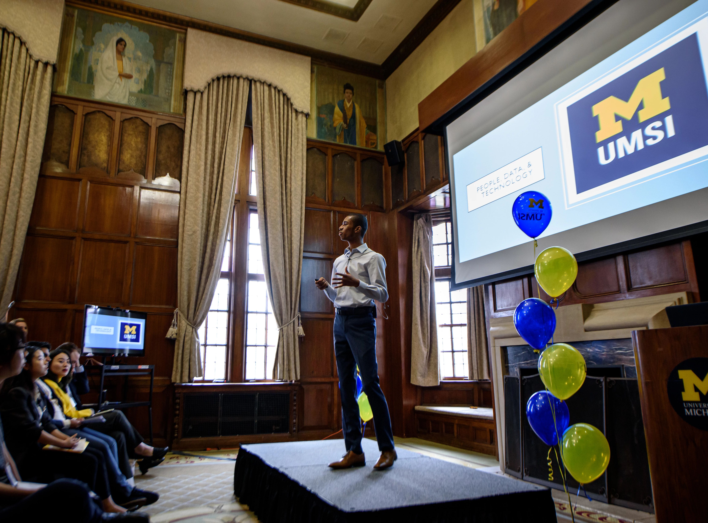
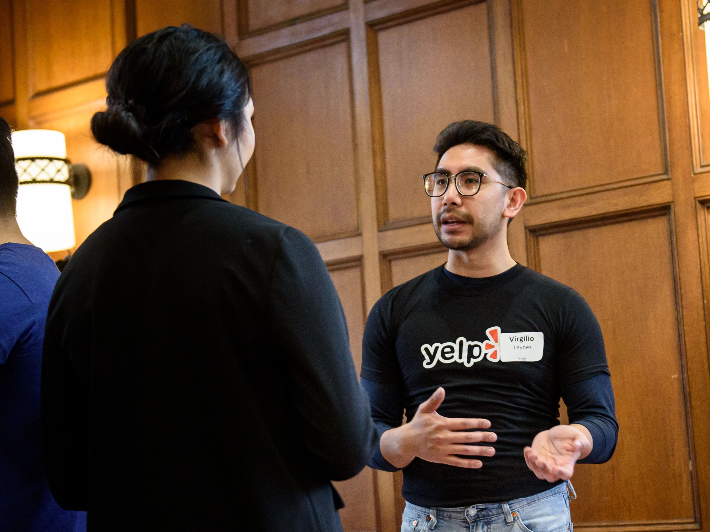

Build Your Network, Build Your Future
Networking is not just about landing your next job or internship—it's about building a community of support, learning, and mutual opportunity throughout your career. At UMSI, our resources are designed to help you develop confidence, strategy, and authenticity in your networking journey.
On this page, you'll find strategies, tools, and examples to help you grow meaningful professional connections and prepare for career fairs, conferences, and outreach opportunities. These resources are designed specifically for UMSI students and tailored to employer expectations.
 Strategic Networking
A strong network starts with a thoughtful strategy. At UMSI, setting clear goals, identifying key contacts, and planning your approach are essential steps to making networking both effective and rewarding.
- [Handout] Building a List for Strategic Networking - develop and organize your list of potential networking contacts.
- [Workshop Slides] Intro to Making Connections - conversation tips, networking etiquette, and follow-up strategies.
- AI Prompt Resource Guide: Networking - how AI tools like ChatGPT can help brainstorm networking messages, introductions, and meeting questions.
- University Career Alumni Networking (UCAN) - connect with Michigan alumni for mentorship, informational interviews, and professional growth.
- Elevator Pitch Rubric - guidance for crafting and practicing a strong self-introduction.
Conference and Career Fair Preparation
Conferences and career fairs are prime opportunities to meet professionals and recruiters. Use these resources to plan ahead and make a strong impression.
- [Workshop Slides] Conference Prep Workshop - strategies to prepare for and navigate conferences successfully.
- [Handout] Conference Preparation Template - a planning tool to organize conference goals, sessions, and contacts.
- [Workshop Slides] 2024 Career Fair Prep - tips for making a strong impression at the UMSI career fair.
- [Recording] 2024 Career Fair Prep Workshop - video recording of the workshop for review and practice.
Outreach Communication
Effective outreach messages can open doors to new opportunities. Use these guides and tools to craft professional, clear, and authentic communication.
- [Handout] Networking Outreach Email Examples - sample emails to guide your outreach to professionals and alumni.
- Networking Email Templates from Resume Worded - ready-to-use examples of outreach emails for different scenarios.
-
Lettersmith - Support for Professional Communication:
- Tool Introduction (Video) - short video overview of how to use Lettersmith effectively.
- Quick Reference Guide (Handout) - step-by-step guide for drafting messages with Lettersmith.
Informational Interviews
Informational interviews are an opportunity to learn from professionals, ask insightful questions, and leave a positive impression as you explore your field. Make the most of these conversations by researching your contacts, preparing meaningful questions, and showing genuine curiosity and professionalism.
- [Workshop Slides] Informational Interviews Using TIARA - framework for structuring conversations to maximize learning and connection.
- [Handout] Informational Interviews - TIARA Method (requires login) - printable resource for preparing and guiding informational interviews.
Networking FAQ
- Do I need to network even if I'm not job searching?
Yes—building relationships early helps you access support, advice, and opportunities later. - What if I'm nervous about reaching out?
Start small with classmates, faculty, and alumni. Using templates can help you feel more confident. - How often should I follow up?
Send a thank-you note within 24-48 hours, and keep in touch periodically to maintain the connection. - Can AI tools really help?
Yes—generative AI can suggest outreach messages or questions, but always review and personalize before sending.
Ready to Connect?
Use these resources as your toolkit for building relationships. Reach out to classmates, alumni, staff, and professionals—remember, the Michigan Networking community is here to support you! If you have any questions, meet with a career coach.